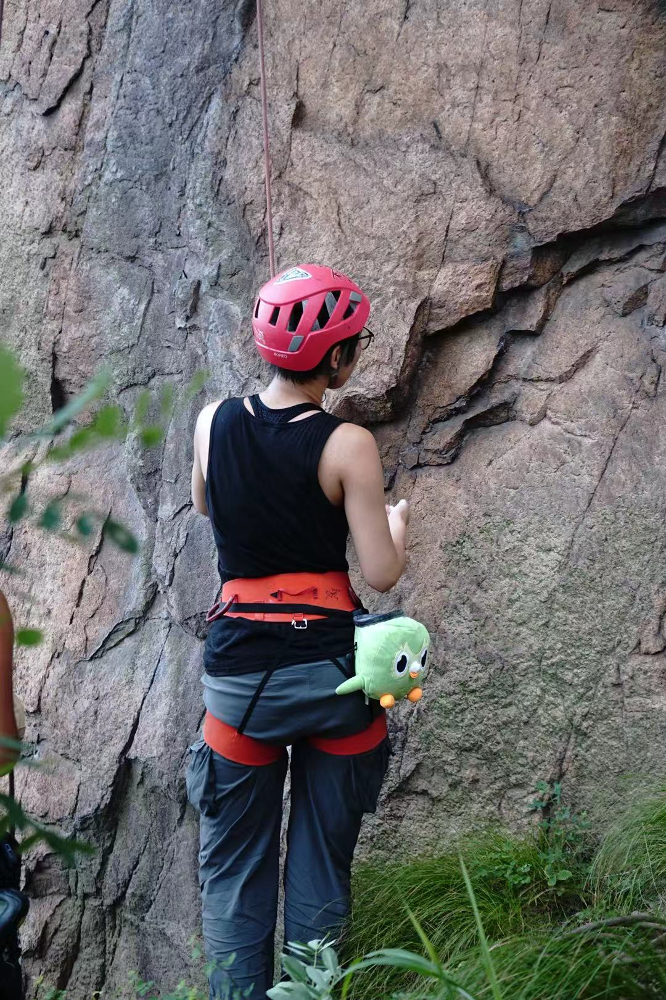

我能帮你 / I Can Help With
申请 UK
Undergraduate
🇬🇧选校与方向
✍️文书 · Personal Statement
英国本科只用一篇 PS 投所有 5 个志愿。
📝笔试与面试准备
🎉Offer 之后
关于我 / About Me

Hi 我是 Wendy！
我从小就不偏科，所有学科都学得差不多，但也没有哪一科特别顶尖。在济南外国语的 A-Level 阶段，老师们曾劝我选择数学或工程这类竞争稍小的方向冲击牛剑，但我最终还是选了计算机——虽然当时对专业的理解还很有限，只觉得编程是一种创作工具。
“当时我自己也没有很明确的想要升什么学科的想法……最后我就想着，那既然计算机被夸的这么好，而且它很火嘛。说明它一就是肯定是个不错的专业，那就选计算机吧。” 抱着这种心态，我没给自己留后路，五个志愿全填了计算机。
申请时我最大的优势是英语——当时雅思 7.5，让我在面试时能一边写题一边清晰地说出思路，给考官留下了不错的印象。再加上校内成绩接近满分，文书和笔试没有明显短板，最终在竞赛成绩并不算突出的情况下被剑桥计算机录取。这个结果让我身边不少人都很意外。
进入剑桥后，我才真正感受到自己和他们口中“典型计算机学生”的差距。身边很多极客对硬件和代码本身充满狂热，而我更关心科技与人之间的连接。大一组队做了个教育小游戏，我开始对游戏产生模糊的兴趣；后来参加系里的 Game Jam，48小时内和陌生人组队做出一款小游戏，那种纯粹的创作激情一下子击中了我。之后我又开始陆续参加 Game Jam，想把技术和自己的美术兴趣结合起来，慢慢找到了属于自己的方向。
大二那年因为家人生病和学业压力，我休学了一年。那段时间我去青岛野攀、跟亲友学画画，却意外地帮我放下了很多包袱，重新确认自己真正喜欢什么。现在我正准备申请游戏厂的工作，希望未来能成为一名技术美术，在代码与画笔之间找到平衡。
我曾面临的挑战 / Challenges Confronted
专业选择摇摆 —— 高中时一直不确定要学什么，老师劝我选数学或工程冲牛剑，我自己的兴趣又很分散，最后在父母影响下才下决心选计算机。“我对计算机感兴趣的点在于，能够把编程当做一种创作的工具。”但在当时，这个理由似乎不够主流。
坚定选择，全力打磨每一个环节 —— 当决定申计算机后，我不再把目标局限在“冲名校”，而是把笔试面试训练当成纯粹的技能提升。竞赛成绩不算亮眼，就把文书里每一句都写得扎实，用自己的口语优势在面试中讲清楚思路，最终拿到剑桥 offer。
考入剑桥后的自我怀疑 —— 身边的同学很多竞赛成绩突出，对硬件和算法充满极客式的热情。而我却对“GPU 跑快多少倍”这类话题毫无感觉，总觉得自己不如别人，甚至怀疑自己是否适合这个专业。
在创作中找到定位 —— 第一次参加 Game Jam，48小时和陌生人组队做出完整的游戏，虽然没拿名次，却在那种纯粹的创作氛围中找到了成就感和归属感。从那以后我接受了“我不是典型技术人”的事实，转而深入探索技术和美术、人体验的交集，准备走向技术美术的道路。
家庭变故与学业压力交织 —— 家中长辈突发疾病住院，同时剑桥的学业压力极大，我完全无法兼顾。“当时我就觉得，哎呀，不行，受不了了，赶紧让我回去。”
休学一年，用热爱疗愈 —— 我申请了休学，回家照顾家人。那段时间去青岛学野攀、跟亲友画画，没有任何学习压力。看似“浪费”的一年反而让我看清了自己真正在意什么，重新蓄满了能量，回来后更坚定地朝向游戏创作的方向前进。
我的亮点 / My Highlights
英语表达能力，是我的差异化武器
英语口语表达是我最有把握的一项，让我在剑桥面试中能够边解题边清晰地阐述思路，给考官留下深刻印象。在竞赛背景不算突出的情况下，这是我最重要的差异化优势。
Game Jam，打开创作世界
从第一次参加系里 Game Jam 开始，我发现自己对游戏创作的热爱远远超出课堂编码。即使在陌生队友面前有点社恐，高压 48 小时的合作却让我感到前所未有的刺激和满足，从此走上游戏开发的道路。
Mentee学生反馈 / Mentee Students Reviews
还没有学生反馈？成为第一个留下评价的 Mentee 吧！